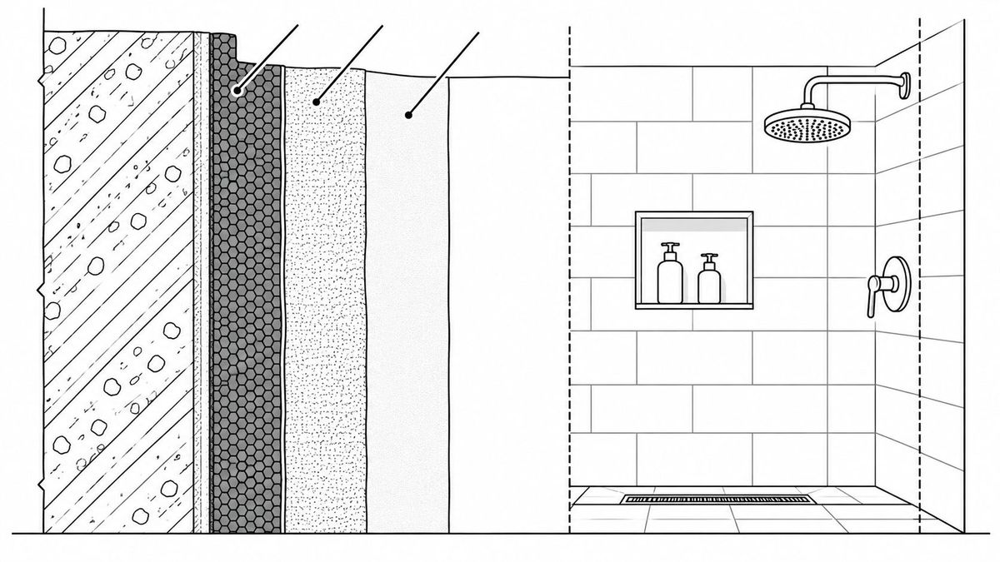

для стен ванной подходят латексные, акриловые и силиконовые краски для влажных помещений с паропроницаемостью от 0,05 мг/(м·ч·Па). Расход 8–12 м²/л на слой, нужно 2 слоя, цена 900–2 400 руб./л. В душевой зоне краску наносят по гидроизоляции и армирующей сетке. Покраска санузла 4 м² обходится в 12 000–35 000 руб. под ключ. Главная причина отслоения — покраска по непрогрунтованной или сырой штукатурке: держится 6–18 месяцев, потом вздувается.
Составы: что держит влагу

| Тип | Паропроницаемость | Цена за л | Где применять |
|---|---|---|---|
| Латексная | низкая | 900–1 800 руб. | сухие зоны, потолок |
| Акриловая влагостойкая | средняя | 800–1 600 руб. | стены вне душа |
| Силиконовая | высокая | 1 200–2 400 руб. | вся ванная, зона душа |
| Силикатная | высокая | 700–1 400 руб. | не для ванной |
| Эпоксидная (краска-эмаль) | нулевая | 1 800–3 500 руб. | зона душа, душевая кабина |
Силиконовая краска отталкивает воду и пропускает пар — оптимальна для ванной с вытяжкой. Латексная образует плотную плёнку: в помещении без вентиляции под ней копится конденсат, и через 2–3 года появляется грибок по швам.
Подготовка основания
| Основание | Что делать | Срок |
|---|---|---|
| Штукатурка | выдержать, отшлифовать, прогрунтовать | 14 дней + 6 часов |
| Гипсокартон влагостойкий | швы армировать, шпаклевать, грунт | 2–3 дня |
| Старая краска | снять отслаивающееся, вымыть, грунт | 1–2 дня |
| Плитка (если красить) | шлифовать, бетон-контакт, шпаклёвка | 3–5 дней |
| Бетон | обеспылить, заделать раковины, грунт | 1–2 дня |
Влажность основания перед покраской — не выше 5 %, проверяется влагомером. Краска по сырой штукатурке запирает влагу внутри: через полгода появляются пузыри и высолы, а ремонт стоит как вся покраска заново.
Гидроизоляция и армирование
| Зона | Мероприятие | Цена за м² |
|---|---|---|
| Душевая зона | обмазочная гидроизоляция 1,5–2 мм + сетка | 400–800 руб. |
| Стены у ванны | гидроизоляция на 200 мм выше борта | 350–700 руб. |
| Остальные стены | грунт глубокого проникновения | 60–120 руб. |
| Углы и примыкания | лента 120 мм в 2 слоя мастики | 300–700 руб./п.м |
Краска не заменяет гидроизоляцию: она защищает поверхность, но не стену от воды. В душевой зоне без гидроизоляции краска отслаивается через 1–2 года, а вода уходит в стену и к соседям.
Смета 2026
| Позиция | Санузел 4 м² | Стоимость |
|---|---|---|
| Краска силиконовая | 6–8 л | 7 000–19 000 руб. |
| Грунт | 10 л | 1 500–3 500 руб. |
| Гидроизоляция | 6 м² | 2 500–5 000 руб. |
| Шпаклёвка и сетка | 20 кг | 1 500–4 000 руб. |
| Работа маляра | 24 м² | 9 000–22 000 руб. |
Итого 21 500–53 500 руб. под ключ. Без гидроизоляции и шпаклёвки (по готовой поверхности) — 12 000–28 000 руб.
Краска или плитка: честное сравнение
| Параметр | Краска | Плитка |
|---|---|---|
| Цена с работой за м² | 900–2 200 руб. | 2 500–5 500 руб. |
| Срок службы | 5–8 лет | 20–30 лет |
| Ремонт | подкрасить участок | заменить плитку |
| Влагостойкость | средняя, нужна гидроизоляция | высокая |
| Вид | спокойный, «как в квартире» | классика санузла |
Краска дешевле в 2–3 раза и позволяет перекрасить комнату за день. Плитка дороже, но не требует обновления 20–30 лет. Компромисс: плитка в душевой зоне и на полу, краска на остальных стенах — так делают в 60 % санузлов при ремонте.
Вентиляция и микроклимат
| Параметр | Норма | Что будет при нарушении |
|---|---|---|
| Воздухообмен | 25–50 м³/ч | конденсат на стенах |
| Влажность | до 70 % при работе вытяжки | грибок в углах |
| Температура стены | выше точки росы | капли и плесень |
| Вытяжной вентилятор | с обратным клапаном | обратная тяга из шахты |
Покрашенная стена «плачет» там, где холоднее всего: обычно в углу у стояка и под потолком. Лечится не перекраской, а утеплением угла и вытяжкой на 30–50 м³/ч.
Уход за покрашенной стеной
- Первые 7 дней не мыть — краска набирает прочность.
- Мыть мягкой губкой с мыльным раствором, без абразива.
- Плесень удалять специальным средством, затем промыть и высушить.
- Мелкие сколы подкрашивать той же краской из остатка партии.
- Раз в 2–3 года обновлять герметик в углах и у ванны.
Остаток краски хранят в плотно закрытой банке до 3 лет — это дешевле, чем покупать новый литр для подкраса через год.
Цвет и свет в санузле
| Цвет | Эффект | Освещённость |
|---|---|---|
| Светло-серый, беж | визуально больше | 200–300 лк |
| Тёмно-синий, графит | эффектно, но «сжимает» | 300–400 лк |
| Зелёный, терракота | тёплый акцент | 250–350 лк |
| Белый | максимум света | 150–250 лк |
В санузле 3–4 м² тёмную краску берут не больше чем на одну стену. На матовой тёмной поверхности видна каждая капля, поэтому в душевой зоне лучше сатиновая или глянцевая.
Порядок работ
- Снять старую отделку, простучать основание, заделать трещины.
- Нанести гидроизоляцию в душевой зоне, высушить 24 часа.
- Зашпаклевать, отшлифовать, обеспылить.
- Прогрунтовать в 2 слоя, высушить 4–6 часов.
- Проклеить малярной лентой углы, плитку, сантехнику.
- Нанести первый слой, высушить 4–6 часов, второй слой.
- Снять ленту через 20–30 минут, установить вентиляцию.
Ошибки и их цена
| Ошибка | Последствие | Исправление |
|---|---|---|
| Краска без гидроизоляции в душе | отслоение за 1–2 года | вскрытие и повтор 15 000–30 000 руб. |
| Покраска по сырой штукатурке | пузыри, высолы | снятие и повтор |
| Латекс без вытяжки | грибок по швам | обработка и перекраска |
| Один слой | просветы, быстрый износ | второй слой |
Чек-лист перед покупкой
- Краска для влажных помещений, паропроницаемость от 0,05.
- Гидроизоляция в душевой зоне выполнена.
- Влажность основания не выше 5 %.
- Грунт подобран под основание, 2 слоя.
- Вытяжка 30–50 м³/ч работает.
Частые вопросы
Можно ли красить стены в ванной обычной краской?
Нет. Нужна влагостойкая краска для влажных помещений: латексная, акриловая или силиконовая. Обычная отслаивается за сезон.
Какая краска лучше для ванной — латексная или силиконовая?
Силиконовая: отталкивает воду и пропускает пар. Латекс плотнее и хуже сохнет в помещении без вентиляции.
Нужна ли гидроизоляция под краску?
В душевой зоне — обязательно. Краска защищает поверхность, но не стену от воды.
Сколько сохнет краска в ванной?
4–6 часов между слоями при +20 °C и влажности 50 %. Полное отверждение — 7 дней, до этого не мыть.
Сколько служит краска на стенах ванной?
5–8 лет при гидроизоляции и работающей вытяжке. Без них — 1–3 года.
Можно ли красить плитку в ванной?
Технически да, но нужна шлифовка, бетон-контакт и эпоксидная краска. Срок службы 3–5 лет, дешевле заменить плитку.
Источники
Материал подготовлен с опорой на следующие документы и данные:
Дисклеймер
Материалы журнала «Ремонт на примерах» носят информационный характер. Приведённые цены, сроки и нормативы являются ориентировочными: они зависят от региона, состояния объекта, уровня исполнителей и текущей рыночной ситуации, поэтому не могут служить точной сметой или гарантией результата. Перед началом работ проконсультируйтесь со специалистами и проверяйте актуальные требования нормативных документов. Редакция не несёт ответственности за решения, принятые на основании этих материалов.